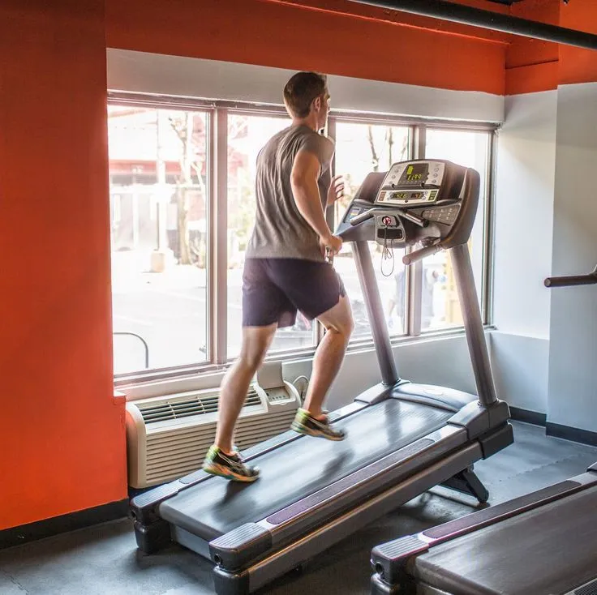

12-3-30 Treadmill Workout: Does It Actually Burn Fat?
You've probably seen the buzz all over TikTok — the 12-3-30 treadmill workout is being hailed as the ultimate fat-burning walking routine. But does it actually deliver on the promise? Can simply walking at a specific incline and speed transform your body and help you lose weight? In this guide, we’ll dive deep into the science behind the trend, how it works, and whether the 12-3-30 workout really helps burn fat effectively — all from the comfort of your own treadmill.
What Is the 12-3-30 Treadmill Workout?
The 12-3-30 treadmill workout is a trending cardio routine that combines simplicity with intensity. It involves walking on a treadmill at a 12% incline, at a speed of 3 miles per hour, for 30 minutes. This concept was popularized by social media influencer Lauren Giraldo and has since gone viral on platforms like TikTok and Instagram.
Unlike other complicated gym workouts, the 12-3-30 approach is easy to remember and requires minimal equipment. It’s designed to provide a steady, uphill cardio challenge that targets multiple muscle groups while being low-impact enough for most fitness levels.
How the 12-3-30 Workout Burns Fat
One of the biggest claims surrounding the 12-3-30 workout is that it helps with fat loss — but how true is that? Walking uphill at a moderate pace for 30 minutes increases your heart rate and keeps you in the optimal fat-burning zone. The incline forces your glutes, calves, and hamstrings to work harder, increasing overall caloric expenditure.
According to fitness experts, consistent incline walking can be just as effective as jogging when it comes to burning fat. The key is consistency and progressive overload — gradually increasing the duration or adding intervals.
Calories Burned During a 12-3-30 Workout
The exact number of calories burned depends on various factors such as body weight, age, and fitness level. However, on average, a person weighing around 155 pounds can burn approximately 240–270 calories during a single 30-minute session of 12-3-30.
This calorie burn is comparable to or even greater than a moderate jog, especially since the incline adds extra intensity. It also creates an "afterburn effect," where your body continues to burn calories post-exercise.
12-3-30 vs. Traditional Cardio Workouts
Traditional treadmill workouts usually involve flat-surface walking or jogging. While effective, they often don’t engage the same level of lower-body muscle activation as incline walking does.
The 12-3-30 treadmill workout forces you to maintain a consistent uphill walk, which challenges your cardiovascular system and helps develop better endurance and lower-body strength. Plus, it tends to be easier on the joints compared to running.
Benefits Beyond Fat Loss
While fat loss is a major selling point, the benefits of the 12-3-30 workout extend far beyond that:
- Improved cardiovascular health: The elevated heart rate improves blood circulation and heart health.
- Leg and glute strength: Walking uphill targets the posterior chain muscles effectively.
- Increased endurance: Consistent 30-minute sessions build stamina over time.
- Mental clarity: Like other cardio workouts, 12-3-30 helps release endorphins that improve mood and reduce stress.
Who Should Try the 12-3-30 Treadmill Workout?
This workout is suitable for most people — from beginners looking to lose weight to advanced gym-goers who want to add variety to their routines. Its low-impact nature makes it ideal for individuals recovering from injuries or avoiding high-impact cardio.
However, those with knee issues or balance problems should start at a lower incline and gradually work their way up.
Tips for Getting Started
- Start slowly: If 12% feels too intense, begin at 6–8% incline and build up.
- Warm up: Walk on a flat surface for 5 minutes before starting.
- Stay consistent: Aim for 3–5 sessions per week to see real fat-burning results.
- Use good posture: Keep your shoulders back, engage your core, and avoid holding onto the treadmill handles for support.
- Hydrate: Incline walking is sweat-inducing — drink water before and after.
Realistic Expectations for Fat Loss
While the 12-3-30 treadmill workout is an effective fat-burning tool, it's not a magic bullet. Sustainable fat loss still relies heavily on a calorie deficit, which includes proper diet and consistent exercise.
What makes 12-3-30 special is its sustainability. It’s simple, easy to follow, and doesn’t require high-impact movement — meaning people are more likely to stick with it over time, which is the real secret to fat loss.
How to Incorporate 12-3-30 Into Your Fitness Plan
Depending on your goals, you can use the 12-3-30 workout as your primary cardio or mix it with strength training and other workouts. Here’s a sample weekly schedule:
- Monday: 12-3-30 workout + upper body strength
- Wednesday: 12-3-30 only
- Friday: 12-3-30 + core workout
- Sunday: Light stretching or yoga
The flexibility of this routine makes it easy to adapt and scale. Whether you're just starting your fitness journey or looking to break through a plateau, 12-3-30 can fit into your plan.
Conclusion
The 12-3-30 treadmill workout isn't just a passing fitness trend — it's a practical, accessible, and results-driven routine that works for a wide range of people. By simply adjusting your treadmill's incline and committing to 30-minute walks, you're engaging your body in a powerful fat-burning session that supports cardiovascular health, muscle tone, and mental well-being.
Whether your goal is to burn fat, improve endurance, or find a sustainable workout you can stick with, 12-3-30 is a solid choice. Its simplicity is its strength — and with consistency, the results can be truly transformative. So next time you step on a treadmill, consider setting it to 12%, walking at 3 mph, and pushing through those 30 minutes. Your body (and mind) will thank you.
Common Mistakes to Avoid
- Holding onto the treadmill handles the entire time: This reduces the effectiveness of the workout by taking pressure off your legs and core. Try to walk hands-free to fully engage your muscles and improve balance.
- Starting with a 12% incline too soon: Jumping straight to a steep incline can strain your knees or back, especially for beginners. It's better to gradually build up to the full 12% over a few sessions.
- Walking with poor posture: Leaning forward or slouching can cause neck and back pain. Keep your shoulders back, core engaged, and head aligned with your spine.
- Skipping warm-up and cool-down: Going directly into incline walking without preparing your muscles increases injury risk. Always walk at 0% incline for 3–5 minutes before and after your session.
- Doing it every single day without rest: Your body needs recovery. Overtraining can lead to fatigue or plateaus. Aim for 3–5 sessions per week with rest days in between.
Recommended Products for the 12-3-30 Treadmill Workout
Ready to elevate your 12-3-30 treadmill workout? These top-rated Amazon fitness products will help you stay consistent, comfortable, and motivated throughout your fat-burning journey.
1. THERUN Incline Treadmill for Running and Walking
This highly-rated treadmill offers up to 12% incline, making it perfect for the 12-3-30 workout. It also includes built-in iFit programming and foldable design—ideal for home use.
2. Brooks Ghost 15 Running Shoes
Comfort and support are essential for incline walking. These cushioned walking/running shoes are known for reducing impact stress on joints during treadmill workouts.
3. Bala Bangles – Wearable Ankle Weights
Add an extra challenge to your 12-3-30 sessions with these stylish ankle weights. They help intensify the workout and improve muscle engagement, especially in glutes and calves.
4. CamelBak Podium Water Bottle
Stay hydrated during your 30-minute incline walks. This lightweight, leak-proof bottle is perfect for treadmill cup holders and easy sips between sessions.
5. Gymboss Interval Timer
Want to break up your 12-3-30 into timed intervals or include active rest periods? This small, wearable timer helps you stay on track and focused.
Each of these products is handpicked to support your 12-3-30 treadmill workout routine—whether you’re just starting out or aiming to burn fat more effectively. Always read product reviews and follow usage guidelines for safety and best results.
Frequently Asked Questions
Yes, the 12-3-30 treadmill workout is effective for fat loss as it keeps your heart rate elevated and burns a significant amount of calories, especially when done consistently and paired with a healthy diet.
Absolutely. Beginners can start with a lower incline, such as 6–8%, and gradually increase to 12% over time. The pace of 3 mph is manageable for most fitness levels.
It’s best to do the 12-3-30 workout 3–5 times per week. This allows your body to recover between sessions while still seeing results from consistent effort.
You’ll need a treadmill that can reach a 12% incline and sustain a speed of 3 mph. Most modern treadmills, including budget options, support this configuration.
No, avoid holding onto the treadmill handles during the workout. Walking hands-free improves posture, activates your core, and increases calorie burn.
Yes! Combining 12-3-30 with strength training is ideal for building muscle, boosting metabolism, and accelerating fat loss. Alternate days or do cardio after weights for maximum benefit.
Most users notice improved stamina and fat loss within 3–6 weeks, especially when combined with proper nutrition and rest. Consistency is key.